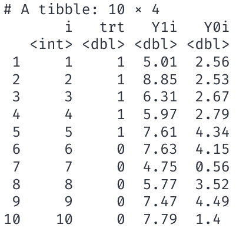
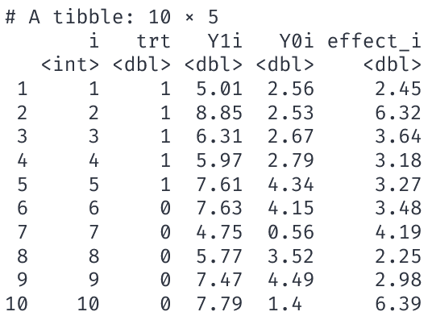
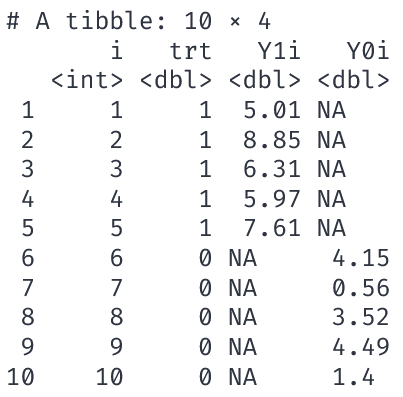

Causal identification
- Goal:
-
Identify the effect of a treatment, \(D_i\), on individual \(i\)’s outcome, \(Y_{D,i}\).
. . .
Ideally, we could calculate the treatment effect for each individual \(i\) as
\[Y_{1,i} - Y_{0,i}\]
- \(Y_{1,i}\): the outcome for person \(i\) when she receives the treatment.
- \(Y_{0,i}\): the outcome for person \(i\) when she doesn’t receive the treatment.
. . .
Referred to as potential outcomes
Ideal data
The ideal data for 10 people

Causal effect of treatment.
\[ \begin{align} \tau_i = Y_{1,i} - Y_{0,i} \end{align} \] for each individual \(i\).
Ideal data
The ideal data for 10 people

Causal effect of treatment.
\[ \begin{align} \tau_i = Y_{1,i} - Y_{0,i} \end{align} \] for each individual \(i\).
Define the mean of \(\tau_i\) as the average treatment effect (ATE)
\[ \color{#81A1C1}{\overline{\tau} = 3.82} \]
. . .
Notice the assignment of treatment is irrelevant in this setting.
Ideal comparison
\[ \begin{align} \tau_i = \color{#81A1C1}{Y_{1,i}} &- \color{#B48EAD}{Y_{0,i}} \end{align} \]
Highlights the fundamental problem of econometrics, much like when a traveler assesses options down two separate roads.
. . .
The problem
- If we observe \(\color{#81A1C1}{Y_{1,i}}\), then we cannot observe \(\color{#B48EAD}{Y_{0,i}}\).
- If we observe \(\color{#B48EAD}{Y_{0,i}}\), then we cannot observe \(\color{#81A1C1}{Y_{1,i}}\).
- We do not observe the counterfactual.
Counterfactual
Hypothetical scenario representing the unobserved outcome for an individual or unit if they had experienced the alternative treatment or condition
. . .
The traveler’s alternative outcome is forever unknown to them.
Fundamental problem of causal inference
A dataset that we can observe for 10 people looks something like

We can’t observe \(\color{#81A1C1}{Y_{1,i}}\) and \(\color{#B48EAD}{Y_{0,i}}\).
But, we do observe
- \(\color{#81A1C1}{Y_{1,i}}\) for \(i\) in 1, 2, 3, 4, 5
- \(\color{#B48EAD}{Y_{0,i}}\) for \(i\) in 6, 7, 8, 9, 10
. . .
Q: How do we “fill in” the NAs and estimate \(\overline{\tau}\)? Or.
. . .
Q: What is a good counterfactual for the missing data?
Estimating causal effects
Notation: \(D_i\) is a binary indicator variable such that
- \(\color{#81A1C1}{D_i=1}\) if individual \(\color{#81A1C1}{i}\) is treated.
- \(\color{#B48EAD}{D_i=0}\) if individual \(\color{#B48EAD}{i}\) is not treated (control group).
. . .
Then, rephrasing the previous slide,
- We only observe \(\color{#81A1C1}{Y_{1,i}}\) when \(\color{#81A1C1}{D_{i}=1}\).
- We only observe \(\color{#B48EAD}{Y_{0,i}}\) when \(\color{#B48EAD}{D_{i}=0}\).
. . .
Q: How can we estimate \(\overline{\tau}\) using only \(\left(\color{#81A1C1}{Y_{1,i}|D_i=1}\right)\) and \(\left(\color{#B48EAD}{Y_{0,i}|D_i=0}\right)\)?
Estimating causal effects
Q: How can we estimate \(\overline{\tau}\) using only \(\left(\color{#81A1C1}{Y_{1,i}|D_i=1}\right)\) and \(\left(\color{#B48EAD}{Y_{0,i}|D_i=0}\right)\)?
. . .
Idea: What if we compare the group of \(n\) peoples’ means? I.e.,
\[ \begin{aligned} =&\color{#81A1C1}{E\left( Y_i\mid D_i = 1 \right)} - \color{#B48EAD}{E\left( Y_i\mid D_i =0 \right)}\\ =&\color{#81A1C1}{E\left( Y_{1i}\mid D_i = 1 \right)} - \color{#B48EAD}{E\left( Y_{0i}\mid D_i =0 \right)} \end{aligned} \]
. . .
Q: When does a simple difference-in-means provide information on the causal effect of the treatment?
. . .
Q: Is \(\color{#81A1C1}{E\left( Y_i\mid D_i = 1 \right)} - \color{#B48EAD}{E\left( Y_i\mid D_i =0 \right)}\) a good estimator for \(\overline{\tau}\)?
Estimating causal effects
Assumption: Let \(\tau_i = \tau\) for all \(i\).
- The treatment effect is equal (constant) across all individuals \(i\).
. . .
Note: We defined
\[ \tau_i = \tau = \color{#81A1C1}{Y_{1,i}} - \color{#B48EAD}{Y_{0,i}} \]
which implies
\[ \color{#81A1C1}{Y_{1,i}} = \color{#B48EAD}{Y_{0,i}} + \tau \]
Q: Is \(\color{#81A1C1}{E\left( Y_i\mid D_i = 1 \right)} \color{#434C5E}{-} \color{#B48EAD}{E\left( Y_i\mid D_i =0 \right)}\) a good estimator for \(\tau\)?
. . .
\(\quad \color{#ffffff}{\Bigg|}=\color{#81A1C1}{E\left( Y_i\mid D_i = 1 \right)} \color{#434C5E}{-} \color{#B48EAD}{E\left( Y_i\mid D_i =0 \right)}\)
. . .
\(\quad \color{#ffffff}{\Bigg|}=\color{#81A1C1}{E\left( Y_{1,i}\mid D_i = 1 \right)} \color{#434C5E}{-} \color{#B48EAD}{E\left( Y_{0,i}\mid D_i =0 \right)}\)
. . .
\(\quad \color{#ffffff}{\Bigg|}=\color{#B48EAD}{E\left( \color{#434C5E}{\tau \: +} \: \color{#B48EAD}{Y_{0,i}} \mid D_i = 1 \right)} \color{#434C5E}{-} \color{#B48EAD}{E\left( Y_{0,i}\mid D_i =0 \right)}\)
. . .
\(\quad \color{#ffffff}{\Bigg|}= \color{#434C5E}{\tau} \color{#434C5E}{+} \color{#B48EAD}{E\left(\color{#B48EAD}{Y_{0,i}} \mid D_i = 1 \right)} \color{#434C5E}{-} \color{#B48EAD}{E\left( Y_{0,i}\mid D_i =0 \right)}\)
. . .
\(\quad \color{#ffffff}{\Bigg|}= \color{#434C5E}{\text{Average causal effect}} + \color{#B48EAD}{\text{Selection bias}}\)
Estimating causal effects
Our proposed difference-in-means estimator
\[ \color{#434C5E}{\text{Average causal effect}} + \color{#B48EAD}{\text{Selection bias}} \]
gives us the sum of
- \(\tau\), the causal, average treatment effect that we want.
- Selection bias: How much treatment and control groups differ, on average.